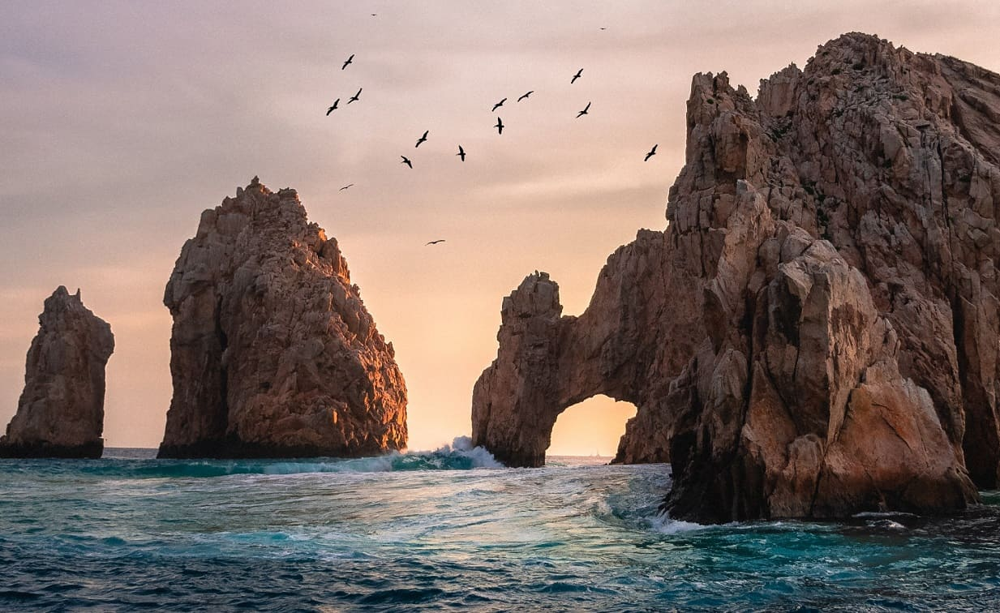
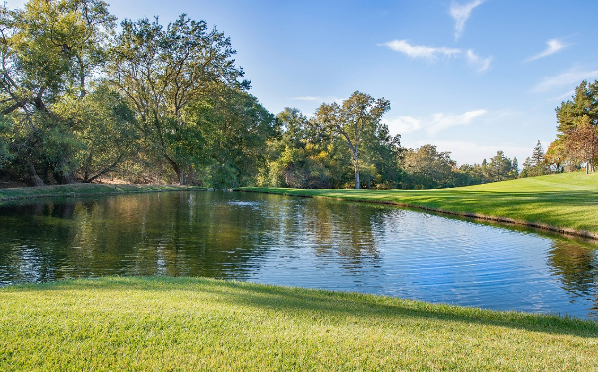
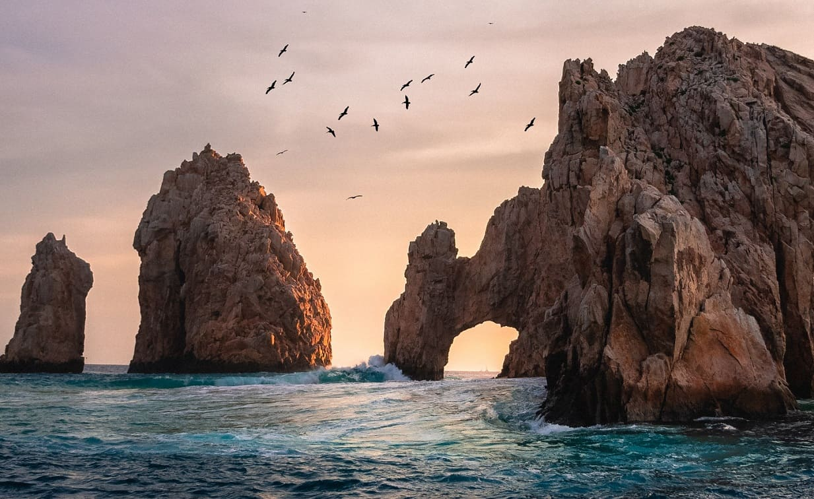
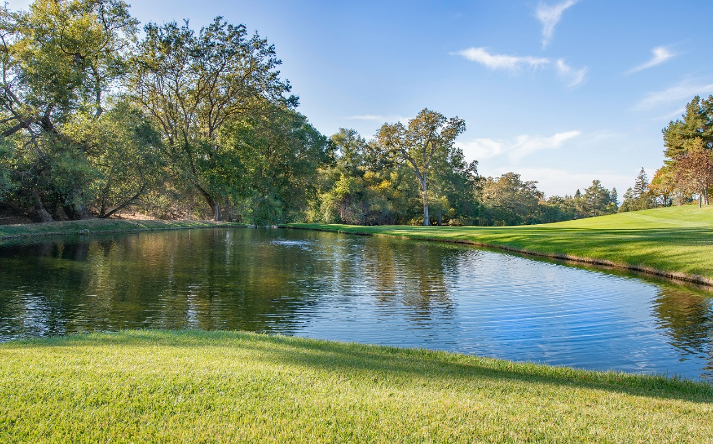

MOUNTAINS
8 848 mMont Everest - Himalaya
8 611 mK2, Pakistan Chine
8 586 mKangchenjung, Himalaya
8 516 mLhotse, Himalaya
8 485 mLe Makalu, Himalaya
But ask the animals, and they will teach you, or the birds in the sky, and they will tell you. Or speak to the earth, and it will teach you, or let the fish in the sea inform you. Which of all these does not know that the hand of the LORD has done this?
Job 12 : 8 - 9
 




For since the creation of the world God’s invisible qualities—his eternal power and divine nature—have been clearly seen, being understood from what has been made, so that people are without excuse. Rm 1:20
8 848 mMont Everest - Himalaya
8 611 mK2, Pakistan Chine
8 586 mKangchenjung, Himalaya
8 516 mLhotse, Himalaya
8 485 mLe Makalu, Himalaya